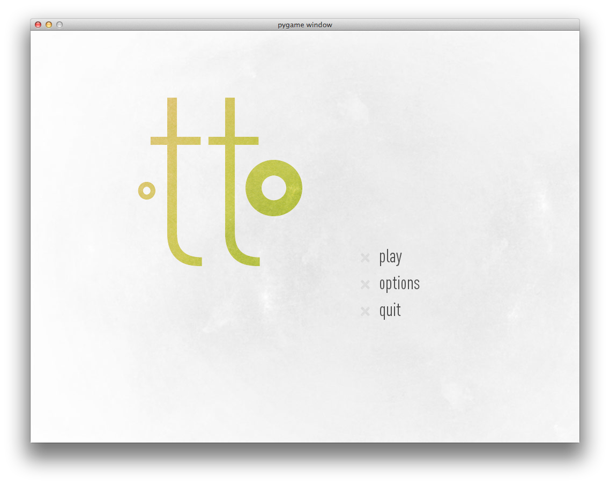
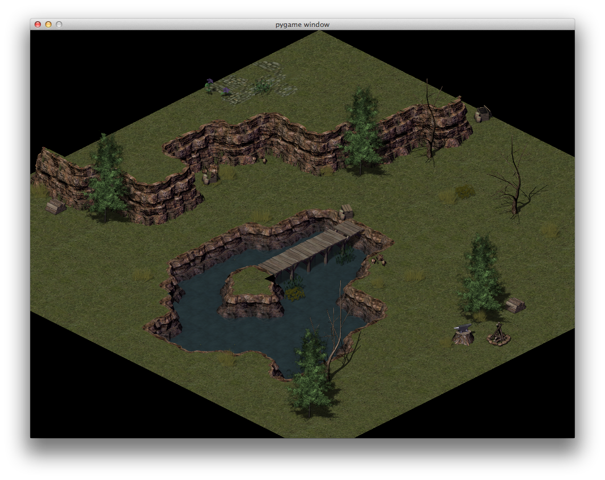

Learning with Pygame!
The easiest way to get up and running is to install the various dependencies straight on your computer. The downside to this is that everything is not contained inside of a virtual environment, so any mistakes made will affect your root system. The alternative is to use a virtual environment -- otherwise get started below.
First, we'll install pygame. To do that, head to the downloads page, and grab the latest version of the OSX Lion build. Run the installer.
Next, download the source code, or install it from Git.
$ cd project_path/repo_name
$ git clone https://github.com/gameandcode/Otto.git
Open terminal if it is not already open.
$ cd project_path/repo_name
$ python main.py
At this point, you should see the game working.
 
Docs can be found here or by using the table of contents to the left.
In order to contribute code, documentation is necessary. To view docs locally, you will have to install Pycco.
$ pip install pycco
And the many other open source projects they depend on.
Thanks to @gameandcode and @chophaus!
Note -- this is not fully functional yet.
Installing everything in a virtual environment is definitely the way to go, but it is a bit unstable and some trickery is required.
Install Virtual Burrito
$ curl -s https://raw.github.com/brainsik/virtualenv-burrito/master/virtualenv-burrito.sh | bash
$ source /Users/{USERNAME}/.venvburrito/startup.sh
Install Homebrew
$ /usr/bin/ruby -e "$(/usr/bin/curl -fksSL https://raw.github.com/mxcl/homebrew/master/Library/Contributions/install_homebrew.rb)"
Install Pip
$ curl -O http://pypi.python.org/packages/source/p/pip/pip-1.0.tar.gz
$ tar xvfz pip-1.0.tar.gz
$ cd pip-1.0
$ sudo python setup.py install
Install Pygame
$ brew install mercurial
$ brew install sdl sdl_image sdl_mixer sdl_ttf smpeg portmidi
$ sudo pip install hg+http://bitbucket.org/pygame/pygame